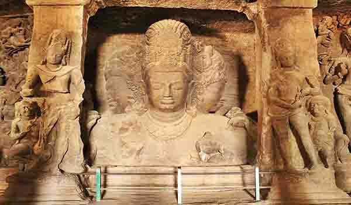

Elephant Caves are a network of sculpted caves located on Elephanta Island and dates back to 600 AD. This island is located on an arm of the Arabian Sea and consists of two groups of caves-the first is a large group of five Hindu caves and the second one includes a smaller group of two Buddhist caves. It is 1.5 miles in length with two hills that rise to a height of about 500 feet. It is located about 7 kms from Mumbai’s mainland shore.
Locally known as Gharapuri, which means the city of caves, it was a worship place for Hindus. When the Portuguese arrived, they named this island Elephanta because of a giant statue of an elephant at the entrance of the caves. This statue now rests in the Bhau Daji Lad Museum in Mumbai.
Through ferry or boat, one can reach there in one hour from the Gateway of India. The cave complex consists of shrines, courtyards, inner cells, grand halls and porticos arranged in the elegant symmetry of Indian rock-cut architecture and filled with delicate stone sculptures of Hindu Gods and Goddesses. At the entrance to the caves, there is the famous Trimurti, the celebrated trinity of Elephanta: there’s Lord Brahma (the Creator), Lord Vishnu (the preserver) and Lord Shiva (the destroyer).
In 1987, these caves were given the status of a UNESCO World Heritage Site to preserve the artwork and are currently maintained by the Archaeological Survey of India.